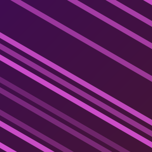

140BPM
Yours: 124. This one is 16 BPM faster.
Live spectrum
20 Hz20 kHz
Bright Monsters
Dusk Theory
Up next, from Deep End Bass
Sand Dancer, Mira Sol
From Wobble Archive, one of the 3 playlists in this review. It’s also on Main Stage, and it’s already in your music library, so a high rating adds the heart and nothing to To Rip.
This track
Your baseline